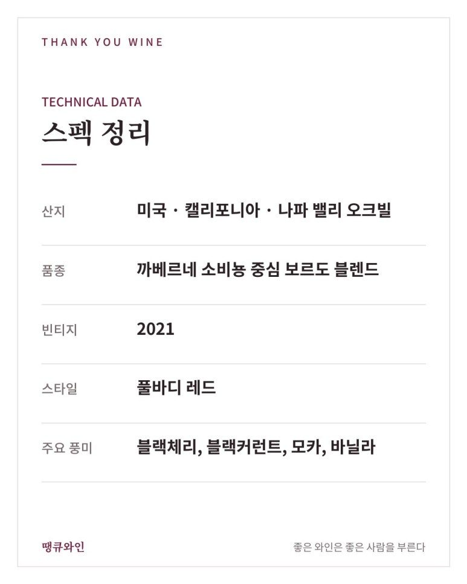
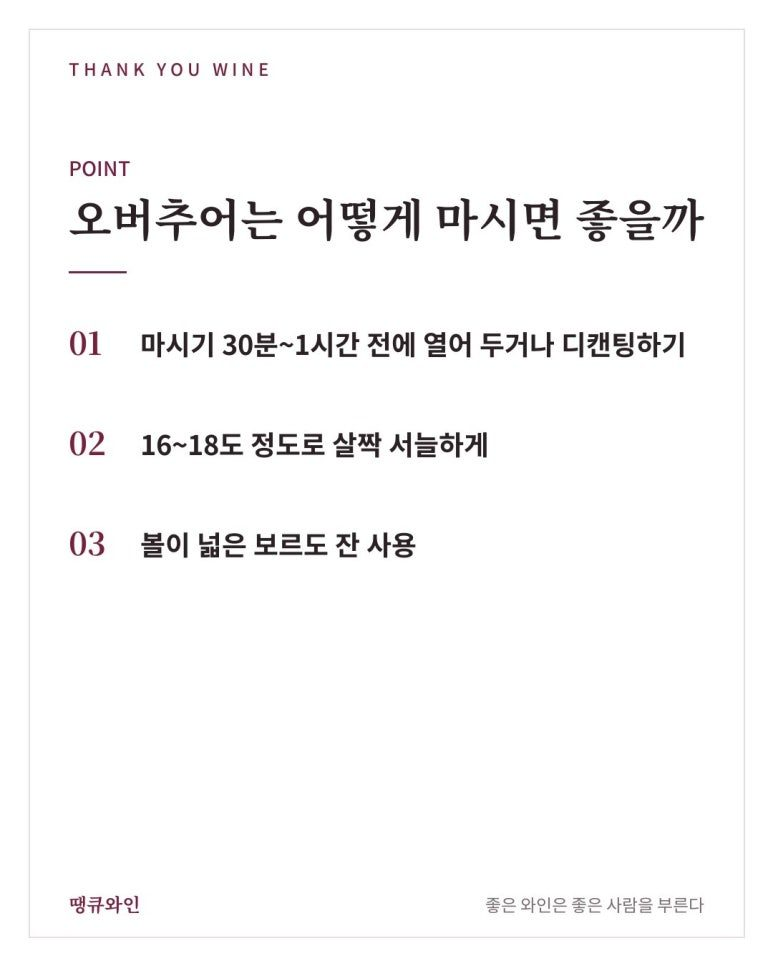
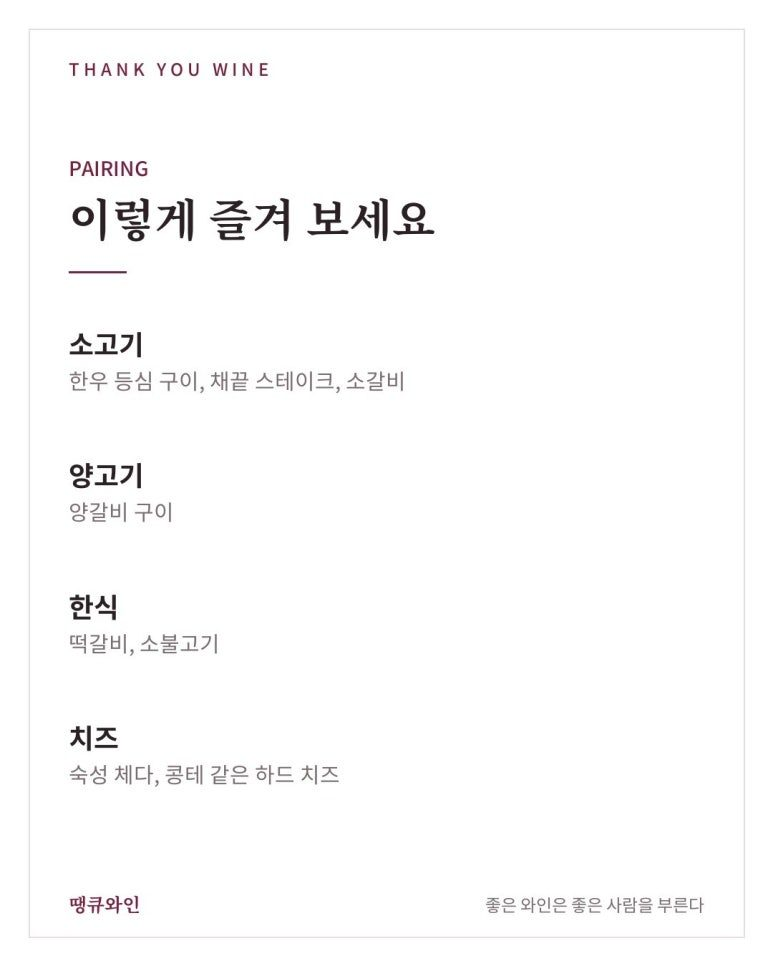
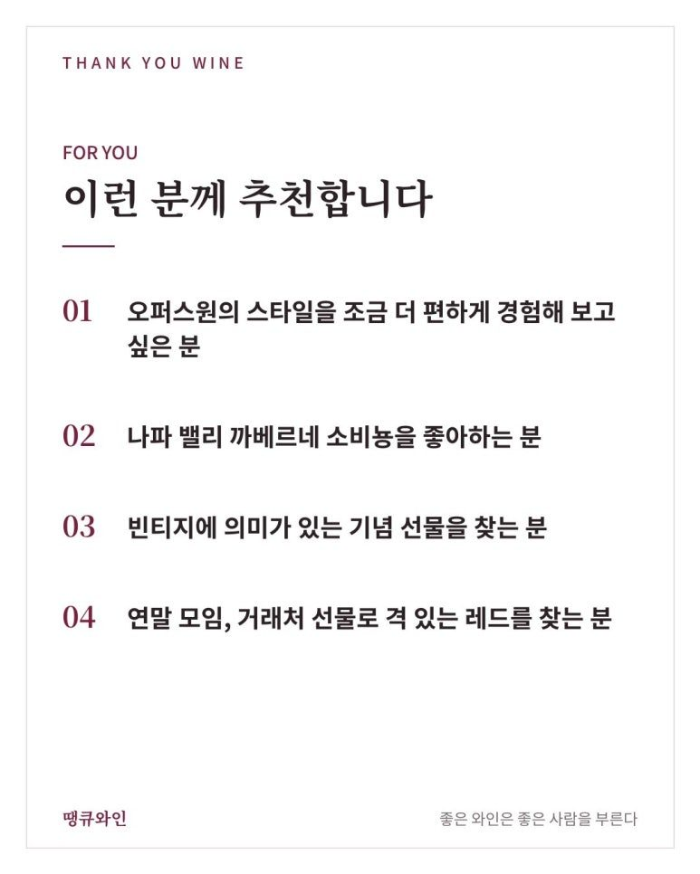

오퍼스원 오버추어 2021
오퍼스원의 ‘서곡’, 처음으로 빈티지를 단 오버추어
오퍼스원 오버추어 2021은 오퍼스원과 같은 포도밭, 같은 팀이 만든, 처음으로 빈티지가 표기된 오버추어예요.
오퍼스원이라는 이름은 와인을 조금이라도 좋아하신다면 한 번쯤 들어 보셨을 거예요.
그런데 오퍼스원 와이너리에서 만드는 또 하나의 와인, 오버추어(Overture)를 아시는 분은 생각보다 많지 않습니다.
‘작품 1번’이라는 뜻의 오퍼스원(Opus One) 앞에서 막을 여는 ‘서곡(Overture)’.
이름부터 오퍼스원과 짝을 이루는 와인이죠.
오늘 소개할 오퍼스원 오버추어 2021은 그동안 논빈티지(NV)로만 나오던 오버추어가 처음으로 빈티지를 달고 나온 한 병입니다.
무엇보다 중요한 포인트는 바로,
오퍼스원과 같은 포도밭, 같은 팀이 만든, 처음으로 빈티지가 표기된 오버추어라는 것.

한눈에 보는 오버추어 2021
- 생산자
- 오퍼스원 와이너리(Opus One Winery)
- 산지
- 미국 캘리포니아 나파 밸리 오크빌(Oakville)
- 품종
- 까베르네 소비뇽 중심의 보르도 품종 블렌드
- 빈티지
- 2021 (빈티지가 표기된 첫 오버추어)
- 스타일
- 풀바디 레드 와인
- 이런 분께
- 오퍼스원의 스타일을 조금 더 편하게 경험해 보고 싶은 분, 격 있는 선물 와인을 찾는 분
- 오퍼스원
- 오랜 숙성을 염두에 둔, 단단하고 깊은 스타일
- 오버추어
- 비교적 일찍 열어도 부드럽게 즐길 수 있는 스타일
- 논빈티지(NV)
- 여러 해 블렌딩 · 일정한 스타일 · 연도 표기 없음
- 빈티지
- 한 해의 포도만 사용 · 그해의 개성 · 연도 표기
오버추어 역사에서 처음으로 ‘한 해’를 담은 와인, 그것도 좋은 해의 와인
이라는 의미가 있습니다.
2021년에 결혼하셨거나, 아이가 태어났거나, 회사를 시작하신 분께는 그해를 기념하는 선물로도 잘 어울려요.
오버추어 2021 테이스팅 노트
오버추어는 오퍼스원처럼 까베르네 소비뇽을 중심으로 메를로, 까베르네 프랑, 쁘띠 베르도 같은 보르도 품종을 블렌딩합니다.
일반적으로 블랙체리, 블랙커런트 같은 검은 과실 향이 먼저 올라오고, 오크 숙성에서 오는 모카, 바닐라 같은 따뜻한 향이 뒤를 받쳐 준다고 평가됩니다.
입안에서는 오퍼스원보다 타닌이 한결 부드럽게 다가와서, 지금 열어도 편하게 즐기기 좋은 스타일이에요.
OPUS ONE OVERTURE 2021
- 산지: 미국 · 캘리포니아 · 나파 밸리 오크빌
- 품종: 까베르네 소비뇽 중심 보르도 블렌드
- 빈티지: 2021
- 스타일: 풀바디 레드
- 주요 풍미: 블랙체리, 블랙커런트, 모카, 바닐라

오버추어는 어떻게 마시면 좋을까?
- 마시기 30분~1시간 전에 열어 두거나 디캔팅하기
- 16~18도 정도로 살짝 서늘하게
- 볼이 넓은 보르도 잔 사용

오퍼스원보다 일찍 열리는 스타일이라, 디캔팅을 길게 하지 않아도 향이 잘 올라옵니다.
오버추어와 어울리는 음식은?
검은 과실과 부드러운 타닌을 가진 나파 밸리 레드라, 풍미 있는 고기 요리와 가장 잘 어울립니다.
- 소고기: 한우 등심 구이, 채끝 스테이크, 소갈비
- 양고기: 양갈비 구이
- 한식: 떡갈비, 소불고기
- 치즈: 숙성 체다, 콩테 같은 하드 치즈

개인적으로는 한우 등심 구이와 함께 추천드립니다.
고기의 고소한 기름 맛과 오버추어의 잘 익은 검은 과실이 자연스럽게 어우러져요.
오버추어 2021, 이런 분께 추천합니다
- 오퍼스원의 스타일을 조금 더 편하게 경험해 보고 싶은 분
- 나파 밸리 까베르네 소비뇽을 좋아하는 분
- 빈티지에 의미가 있는 기념 선물을 찾는 분
- 연말 모임, 거래처 선물로 격 있는 레드를 찾는 분

이름만 들어도 알 만한 와이너리의 와인이라, 와인을 잘 아는 분께도 처음 접하는 분께도 이야깃거리가 되는 한 병입니다.
자주 묻는 질문
오버추어는 오퍼스원과 같은 와이너리에서 만드나요?
네, 오퍼스원 와이너리가 같은 포도밭의 포도로 만드는 세컨드 와인입니다.
오퍼스원과 오버추어를 같이 마셔 봐도 좋을까요?
네, 2021처럼 같은 빈티지끼리 나란히 마셔 보면 같은 포도밭에서 나온 두 와인의 차이를 더 잘 느낄 수 있습니다.
바로 마셔도 괜찮을까요?
오퍼스원보다 부드럽게 일찍 열리는 스타일이라, 30분~1시간 정도 열어 두면 충분히 즐길 수 있습니다.
결국 오버추어의 매력은 ‘오퍼스원으로 가는 첫 문’입니다
오버추어는 이름 그대로 오퍼스원이라는 작품의 서곡 같은 와인입니다.
같은 포도밭, 같은 팀의 손길을 조금 더 편하게 만날 수 있고, 2021은 그 오버추어가 처음으로 한 해를 담아낸 빈티지예요.
“오퍼스원이 궁금했다면, 오버추어부터” 시작해 보셔도 좋겠습니다.
필요하실 때 편하게 연락 주시면 함께 골라 드릴게요.
이 글은 땡큐와인 네이버 블로그에 먼저 올린 글이에요.